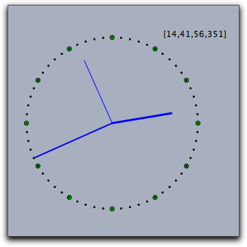

time()[h,m,s,ms] of four integers. The four values correspond to "hour," "minute," "second," "millisecond" on the computer's clock. t contains the time information. The subsequent code is used to produce a clocklike drawing on the view. An auxiliary function p(w) is defined that produces points on the unit circle. The code must be placed in the "Tick" section of CindyScript in order for it to run continuously. t=time(); p(x):=[sin(2*pi*x),cos(2*pi*x)]; O=[0,0]; S=p(t_3/60)*4; M=p(t_2/60)*5; H=p((t_1*60+t_2)/(12*60))*3.5; draw(O,S); draw(O,M,size->2); draw(O,H,size->3); apply(1..12,draw(p(#/12)*5)); apply(1..60,draw(p(#/60)*5,size->1)); drawtext((3,5),t);
 |
date()[y,m,d] of three integers. The three values correspond to "year," "month," and "day" on the computer's calendar. seconds()resetclock(). The time is scaled in a way such that one unit corresponds to one second. The time's resolution is on the millisecond scale. resetclock()seconds() operator. simulationtime()wait(<real>)repeat(25,i, playtone(72+i); wait(100); )
playanimation()pauseanimation()stopanimation()
Page last modified on Monday 05 of September, 2011 [09:10:13 UTC].
The original document is available at
http://doc.cinderella.de/tiki-index.php?page=Timing%20and%20Animations